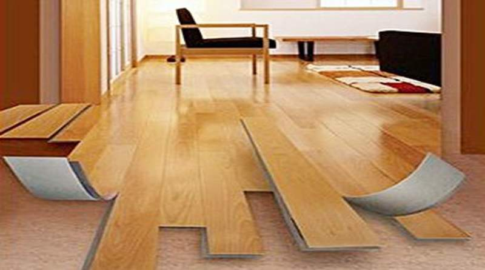

Материалы для обустройства полов.

Материалы для ремонта или обустройства полов заслуживают особого внимания.
В первую очередь необходимы так называемые вяжущие вещества. К ним относятся глина, строительная известь, цемент, строительный гипс, черные вяжущие.
ГлинаГлина – землистая минеральная масса. При смешивании с водой из глины получается пластичное тесто, сохраняющее после высыхания приданную форму без образования трещин и усадки, а также приобретающее после обжига твердость камня. В этом состоянии глина сохраняет прочность до первого соприкосновения с водой, где снова размокает и превращается в тесто. Глинистые минералы прекрасно поглощают и удерживают влагу на своей поверхности.
Глины бывают жирными и тощими. Жирные глины богаты глинистыми минералами, а тощие сильно запесочены. Пластичность и прочность жирных глин значительно выше, чем у тощих, однако тощие обладают другими качествами: они быстро и легко сохнут, имеют небольшую усадку, не трескаются в отличие от жирных глин. Для того чтобы повысить качества жирных глин, в них вводят различные добавки – костру, сечку соломы, шлак, песок и пр. Качество глины зависит от ее пластичности, что можно проверить на ощупь.
Еще один вид глины – белая, чаще всего называемая каолином за счет содержащегося в ее составе каолинита. Из белой глины с добавлением некоторых других веществ изготавливают фарфоровые и фаянсовые изделия.
От того, какие примеси входят в состав глины, зависит ее цвет. Так, наличие гумуса в глине придает этому материалу черный цвет, оксидов железа и марганца – желтый, красный или темно-красный оттенок.
ИзвестьИзвесть – строительный материал, применяемый для приготовления строительных растворов и бетонных смесей. По условиям твердения строительная известь разделяется на воздушную, твердеющую только в воздухе, и гидравлическую, твердеющую и в воде, и в воздухе. После обжига известняков получается негашеная известь – известь-кипелка, или комовая. Известь гасят в воде из расчета 40 л воды на 10 кг материала.
По времени гашения извести различают быстрогасящуюся (5–8 минут), среднегасящуюся (10–20 минут) и медленногасящуюся (около 30 минут). Для того чтобы вся известь погасилась, ее выдерживают в емкости под закрытой крышкой около 2–3 недель.
В результате этого процесса получается известковое тесто. При затвердении известковое тесто дает значительную усадку. Чтобы этого не произошло, в него добавляют песок.
Быстрогасящуюся известь насыпают в емкость, наполненную водой до половины объема. Известь должна быть полностью ею покрыта. При выделении пара известь доливают и тщательно все перемешивают.
Иначе гасят среднегасящуюся известь: ее насыпают в емкость примерно до 1/4 объема и заливают водой до половины. Когда появится пар, быстро перемешивают деревянной лопаткой, после гашения доводят до густоты молока.
Медленногасящуюся известь засыпают в бак и слегка смачивают водой. Как только на извести-кипелке появятся трещины (признак гашения), добавляют воду и перемешивают. Затем доливают воду до получения известкового молока и выдерживают не менее 3 недель.
ЦементЦемент – самый прочный вяжущий материал, твердеющий как в воздухе, так и в воде. Для приготовления строительных растворов и бетонных смесей используются портландцемент, шлакопортландцемент, безусадочный и расширяющийся цемент и пр. Из них особого внимания заслуживают глиноземистый цемент и портландцемент.
Глиноземистый цемент получают следующим образом: сплавляют вместе глинозем и известь при температуре 1400° С, дробят эту массу на куски, которые затем промалывают. Смешанный с водой цемент спустя непродолжительное время затвердевает, превращаясь в камень особой прочности. Показателем этого качества является марочная прочность, которую глиноземистый цемент набирает спустя три дня после изготовления: его выпускают марок 400, 500 и 600. Во многом марка цемента зависит от тонкости его помола. При длительном хранении цемента его марочная прочность снижается: за полгода на 25 %, за год – на 40 %, за два года – наполовину.
Портландцемент представляет собой порошок серого цвета с зеленоватым оттенком. Для его приготовления глину и мел обжигают при температуре 1500 °C, затем размалывают получившуюся массу на специальных мельницах, одновременно добавляя туда различные вещества: гипс, кварцевый песок, шлаки и др. При смешивании с водой получается монолит особой прочности, приобретающий марочную прочность на 28-й день после затвердения.
По сравнению с другими вяжущими цемент затвердевает гораздо быстрее: уже через 40 минут после затворения водой он приобретает начальную твердость, а спустя 12 часов – окончательную.
Битум и деготьК черным вяжущим относятся битум и деготь черного или темно-коричневого цвета, применяемые для изготовления покрывочных мастик, при гидроизоляционных работах в качестве добавок в строительные растворы. Черные вяжущие водостойки, водонепроницаемы, эластичны, при нагревании размягчаются, а при охлаждении отвердевают.
Заполнители растворов и бетонаДругие, не менее важные материалы – каменные, используемые в качестве заполнителей растворов и бетонов.
К каменным материалам относятся бутовый камень, щебень, песок и гравий.
Бутовый каменьБутовый камень применяется для кладки фундамента, мощения дорог и пр.
ГравийГравий – камень сравнительно небольшого размера. Длина элементов мелкого гравия – от 5 до 15 мм, среднего – 20–40 мм, крупного – около 80 мм. Гравий бывает яйцевидным, мелкоокатанным, хорошо окатанным, щебневидным и пр.
ЩебеньЩебень – камень того же размера, что и гравий. Щебень получают путем дробления искусственных камней или горных пород. Щебень считается более приемлемым заполнителем, чем гравий, поскольку в нем гораздо меньше примесей. Кроме того, он обеспечивает лучшее сцепление с цементом.
ПесокДля приготовления бетона и строительного раствора используют песок. Природный песок получается в результате разрушения горных пород. Такой песок лучше всего использовать в качестве мелкого заполнителя. Горный песок имеет зерна угловатой формы, с шероховатой поверхностью, обеспечивающей лучшую сцепляемость с вяжущими материалами.
Различают горный (овражный), речной и озерный песок. Горный песок засорен глинистыми частицами, озерный – илом. Самым чистым считается речной песок, но у него закругленные частицы, а потому он менее подходит для строительных работ. Чаще применяют очищенные – промытые и просеянные – пески с содержанием ила, глины и других веществ не более 5 % от общей массы. По крупности зерен песок делится на мелкий (1–2 мм), средний (2–2,5 мм) и крупный (2,5–3,5 мм).
Древесные материалыОдно из первых мест среди материалов для отделки пола занимают древесные материалы. Древесина достаточно прочный, с небольшой теплопроводностью и плотностью материал. Он поддается практически любому способу механической обработки. По сравнению с любым другим материалом у древесины не так уж и много недостатков. Это прежде всего подверженность горению и гниению. Однако при соблюдении правил эксплуатации пола степень риска можно снизить.
Вкратце опишем основные характеристики древесных пород, используемых в строительстве. Для отделки пола применяются материалы из хвойных пород деревьев – сосны, ели, лиственницы и пихты, из лиственных – березы, бука, липы, осины, ольхи и клена.
Самыми популярными являются материалы из хвойных пород: ствол у них прямой и длинный, а наличие смолы гарантирует долговечность покрытия. Именно поэтому большинство материалов для пола изготавливают все-таки из хвойных пород. Качество древесины оценивается по механическим, физическим и эстетическим свойствам.
Механические свойства древесины – это прочность на сжатие, твердость и вязкость. Прочность на сжатие вдоль волокон у разных пород неодинакова: примерно от 400 до 650 единиц по порядку у следующих пород: осина, ель, сосна, береза, дуб, лиственница. Прочность на сжатие у них довольно высокая, не уступающая лучшим маркам бетона. Достаточно упомянуть о том, что многие старинные дворцы Венеции до сих пор стоят на столбах-сваях из русской лиственницы. Это при том, что многим из них уже более 500 лет. За это время деревянные сваи превратились в камень, а значит, вполне могут прослужить еще один срок.
Эстетические свойства древесины – цвет, фактура и текстура открытой поверхности. Цвет древесины у разных пород различный: белый – у березы и осины, черный – у эбенового дерева, многочисленные оттенки от светло-желтого, кремового до красного, коричневого и серого – у остальных пород. При воздействии воды, воздуха и химических реактивов цвет у некоторых пород может меняться.
Другая характеристика – фактура, или блеск поверхности. Поверхность таких пород, как платан, белая акация, клен, бук, дуб и некоторые другие, обладает блестящей поверхностью. Большинство же древесных пород имеет матовую, с едва заметным глянцем поверхность. С помощью некоторых приемов (лакировка, вощение и полировка) можно усилить блеск.
Текстура (рисунок волокон), определяющая ценность породы для отделки пола, зависит от особенностей внутреннего строения ствола и направления среза. Почти все лиственные породы имеют декоративную, нарядную текстуру. Особо хочется выделить такие породы, как грецкий орех, бук, карагач, платан, ильм. Эти деревья южных широт – обладатели выразительных, запоминающихся рисунков. Очень хорошо заметен рисунок у хвойных пород. Однако он не так декоративен, как у лиственных.
К физическим свойствам древесины относятся плотность (в сухом виде плотность у разных пород неодинакова, и в постоянно влажных условиях она возрастает), влажность (от 8 до 15 единиц), разбухание или усушка, устойчивость к различным химическим воздействиям, пористость (у хвойных пород – 45–80 единиц, а у лиственных – 30–80).
При обустройстве полов немаловажное значение имеют также технологические и эксплуатационные свойства древесины: возможность склеивания, легкость обработки, способность удерживать металлические крепления и пр.
Био– и огнестойкость древесины
Практически любой материал для отделки пола имеет какой-нибудь недостаток. Чрезмерное увлажнение древесины приводит к ее загниванию, а чрезмерная пересушка – к возгоранию. Можно попытаться несколько снизить риск появления гнили или возгорания, однако надежных методов борьбы с ними до сих пор не придумано.
Для устранения недостатков древесины существует три способа – механический, химический и эксплуатационный.
Механический метод заключается в том, что в период обустройства полов предусматривают надежную защиту деревянных элементов от возгорания или увлажнения. Для этого проводят следующие виды работ: облицовка негорючими материалами, устройство гидро– и теплоизоляционного слоя.
Химический метод включает в себя антисептирование поверхности древесины. Для этого используют либо медный купорос, либо фтористый или кремнефтористый натрий. Этими водными растворами обрабатывают один или два раза поверхность материалов. Обращают особое внимание на то, что соприкосновение кремнефтористого или фтористого натрия с гипсом, мелом или известью недопустимо.
Для повышения огнестойкости древесины ее обрабатывают специальными составами – антипиренами. К антипиренам относятся растворы сульфата аммония и солей борной и фосфорной кислоты. Этими растворами следует смазывать поверхность не менее 2 раз. Такой материал не поражается насекомыми и грибками.
Ассортимент древесных материалов
Ассортимент древесных материалов поистине огромен. Сюда входят не только круглые лесо– и пиломатериалы, но также и листовые, клееные, искусственные материалы из отходов древесины на минеральных и органических вяжущих. Нас интересуют прежде всего пиломатерилы, изготовленные из бревен продольной распиловки.
Тонкие пиломатериалы называются тесом. Если ширина материала превышает его толщину в два и более раза, он называется доской, а если ширина превосходит толщину менее чем в 2 раза – бруском. При толщине или ширине свыше 10 см пиломатериал называют брусом.
Узкие боковые грани доски – это кромки, широкая грань – пласть, а концы досок – торцы. Обрезной называется доска с опиленными кромками и прямоугольными ребрами; брус, опиленный по четырем граням, также обрезной, иногда его называют острокантным брусом.
Неопиленная кромка у бруса – это обзол. В зависимости от угла, образованного с одной из опиленных граней, обзол бывает острым или тупым.
Распиленное пополам вдоль бревно образует две пластины, сечение которых представляет собой полукруг, а четверть круга – четвертину.
Фанеру чаще всего изготавливают из березы. Встречается осиновая, сосновая фанера, но гораздо реже. Стандартная толщина фанерных листов – 1,5–18 мм. Фанерная плита – лист, толщина которого превышает 12 мм. Фанера бывает водостойкой и средневодостойкой. В продаже встречается и декоративная фанера, иногда называемая отделочной, с лицевой стороны оклеенная декоративной пленкой или шпоном ценных пород древесины. Рисунок и цвет декоративной фанеры самые разнообразные, с имитацией натуральных материалов: под плитку, кирпич, камень, дерево и пр.
Органические вяжущие и материалыОрганические вяжущие разделяются на два вида: дегтевые и битумные. Главные свойства этих материалов – способность сцепляться практически с любым материалом благодаря вязкости, водонепроницаемости, пластичности при повышенной температуре и твердости при пониженной и нормальной. Кроме того, эти материалы обладают устойчивостью к воздействию таких веществ, как кислоты, газы и щелочи.
Битум бывает природным и искусственным. Самым дорогим считается природный битум, используется он только для получения битумного лака в качестве исходного сырья. При переработке нефти получают искусственный битум. Он, в свою очередь, подразделяется на три разновидности: жидкий, мягкий и твердый. Из твердого битума изготавливают мастики и рулонные кровельные материалы. Из мягкого – эмульсии, обмазки и гидроизоляционные материалы; жидкий же применяют для получения холодного асфальтобетона.
Расскажем о битумных материалах, используемых в качестве гидроизоляционного слоя. Самым популярным из них по праву является рубероид, представляющий собой пропитанный мягким битумом картон, покрытый с двух сторон твердым битумом.
К битумным материалам относится также стеклорубероид, используемый в тех же целях, что и рубероид. Стеклорубероид изготавливают на основе стеклоткани, поэтому он более устойчив к поражению грибками.
Деготь– вещество, получаемое при переработке твердого топлива – сланца, торфа, бурого и каменного угля. Состав дегтя такой же, как и у битума. Используется он в тех же целях, однако дегтевые вяжущие и материалы на основе дегтя считаются менее приемлемыми для обустройства полов: водонепроницаемость у дегтевых материалов средняя, поэтому и использовать их нужно с осторожностью.
Синтетические материалыК синтетическим материалам относятся пластмассы, лаки, краски, мастики, клеи и химические волокна; сырьем для их производства являются синтетические полимеры.
Поливинилхлорид – термопластичный прозрачный полимер с повышенной огне– и водостойкостью. Из него изготавливают профильный погонаж, материалы для покрытия полов, пенопласт и различные плитки.
Полиэтилен – термопластичный, химически стойкий полимер, бывает относительно жестким или очень пластичным (это зависит от способа производства).
Полипропилен – термопластичный прозрачный полимер, используемый для получения листовых, плиточных и пленочных материалов.
Полистирол – бесцветный хрупкий термопластичный полимер, использующийся для изготовления облицовочных плиток и теплоизоляционных плит.
Полиакрилат – полимер, используемый для изготовления лакокрасочных материалов.
Полиэфирная смола – полимер, который после затвердевания не нагревается и не плавится в отличие от перечисленных выше. Одна его разновидность – алкидная – используется в производстве линолеумов и лакокрасочных материалов.
Эпоксидная смола – полимер, используемый для изготовления строительных клеев.
Фенолальдегидная смола – высокопрочный полимер, используемый в производстве ДСП и ДВП, стекло– и минераловаты.
Формальдегидная смола обладает теми же свойствами.
Силиконы – кремнийорганические полимеры, применяемые в производстве лаков, красок, эмалей и клеев. Эти полимеры отличаются высокой огнеустойчивостью.
Синтетические теплоизоляционные материалыТеплоизоляционные пластмассовые материалы бывают ячеистыми и сотовыми. К ячеистым относятся пенопласт и поропласт, к сотовым – так называемые сотопласты, выпускаемые в виде оклеенных с обеих сторон бумажно-полимерных сотов. Пено– и поропласты бывают жесткими, полужесткими и мягкими. Последние применяют в качестве губчатой подосновы линолеумов; для других материалов при обустройстве полов используют жесткие и полужесткие плиты.
Пенополистирол выпускается в форме плит (матов) белого цвета, используемых для утепления полов. При обустройстве предусматривают защитные меры против возгорания этого утеплителя.
Пенополиуретан изготавливают в виде эластичных матов и жестких плит. Как утеплитель его крайне редко используют для полов, в основном он применяется для стен.
Фенольный пенопласт получают из термореактивного полимера. Он обладает прекрасной термо– и огнестойкостью.
Гидроизоляционные материалыСамый простой материал подобного рода – это, конечно же, полиэтиленовая пленка. Она продается в виде рулонов шириной до 140 мм и длиной от 40 м, толщина пленки – 0,05–0,2 мм.
На основе стекловолокна и полиэфирной смолы готовят волнистый стеклопластик. Для обустройства полов его не используют, поэтому мы не будем говорить о нем подробно.
Полимерные мастики применяют для заделки стыков. Бывают следующие разновидности мастик: нетвердеющие (УМС-50, МПС, бутэпрол) и вулканизирующие. Последние состоят из двух компонентов, соединяемых непосредственно перед использованием. Довольно часто мастики заменяют эластичными пористыми прокладками в виде лент и жгутов (гернит, пороизол).
Связующие материалыОдним из главных компонентов лакокрасочных материалов являются связующие. Все подобные вещества делятся на две большие группы: водные и неводные. В свою очередь, водные разделяются на минеральные и органические.
Расскажем немного о водных минеральных связующих. К ним прежде всего относится цемент – обычный портландцемент, а также белый и цветной, известь, жидкое стекло.
Кроме портладцемента, выпускают еще так называемый цветной цемент, или цветные цементные краски, что означает одно и то же. Цветной цемент бывает желтого, розового, красного, коричневого, зеленого, голубого и черного цветов. Цветные цементные краски используют в течение ближайшего часа до начала затвердевания раствора.
Органические вяжущие представляют собой разнообразные клеящие вещества растительного, животного и синтетического происхождения. Клеящая способность, прочность образованной пленки и водостойкость у этих веществ неодинаковы. Также различается у них склонность к плесневению.
Костный и мездровый клеи выпускаются в виде плиток, чешуек, бесформенных комков, мелких гранул. Бывает также студнеобразная форма клея. Клей перед применением замачивают на сутки в воде и варят на водяной бане до полного растворения комочков.
Все виды клеев применяют для приготовления клеевых красок, шпаклевок, подмазок и разнообразных грунтовок, которые можно приготовить и в домашних условиях.
Казеиновый клей выпускается в виде порошка серо-зеленого цвета. Перед использованием порошок заливают водой (примерно 50 частей воды от массы порошка), оставляют для набухания на 30 минут, после чего клей готов к применению. Казеиновый клей обладает многими положительными качествами: он достаточно устойчив к влаге, действие его необратимо – высохший слой не размягчается водой.
Растительные клеи (клейстеры) в последние годы почти не применяют, используя вместо них более прочные синтетические. Правда, в небольших по объему отделочных работах этот клей все же применяется. Для его приготовления берут мучной или крахмальный клейстер, заваривают его крутым кипятком. Более удобным считается декстрин, потому что его заливают холодной или теплой водой. Иногда для того, чтобы повысить клеящую способность растительных клеев, в них добавляют немного животного клея.
По сравнению с животными и растительными клеями синтетические обладают целым рядом преимуществ: отсутствием подверженности гниению, прекрасной смешиваемостью с любым компонентом малярных составов. К синтетическим относятся клей КМЦ, метилцеллюлоза, ПВА и латексные клеи.
Карбоксиметилцеллюлоза – полное название клея КМЦ. Он представляет собой порошок, который после затворения холодной водой становится сметанообразной полупрозрачной массой. Для приготовления цветного клеевого раствора пигмент предварительно тщательно размешивают с водой и постепенно добавляют в клей при непрерывном перемешивании. Для получения водостойкого покрытия в раствор КМЦ можно добавить квасцы или формалин (примерно 1 часть от общего количества раствора).
Поливинилацетатная эмульсия (клей ПВА) представляет собой сметанообразную массу белого цвета, с высокой клеящей способностью. Этот вид клея применяют в основном для приклеивания пленочных и плиточных облицовочных материалов. Также ПВА можно использовать для приготовления окрасочных составов.
К латексным клеям относятся синтетические составы, выпускающиеся под названием «Бустилат» и «Гумилакс», используемые так же, как и ПВА.
К неводным связующим относятся олифа, природные и синтетические смолы.
Олифа – это пленкообразующее вещество, внешне напоминающее растительное масло. Кстати, олифу и получают из нескольких сортов растительных масел: высыхающих (ореховое, конопляное, льняное и тунговое), невысыхающего (касторовое) и полувысыхающего (подсолнечное). По виду олифа – вязкая жидкость желтоватого цвета, с резким характерным запахом. Нанесенный на поверхность слой олифы после высыхания образует прочную глянцевую пленку.
Существует несколько разновидностей олифы: натуральная, полунатуральная (оксоль), синтетическая, комбинированная, композиционная и алкидная.
Не так давно натуральную олифу производили только из оливкового масла, из-за которого она и получила свое название. В настоящее время олифу вырабатывают из конопляного или льняного масла, после чего она служит связующим для приготовления красок, шпаклевок, грунтовок и эмульсий. Натуральная олифа стоит очень дорого, поэтому ее используют только для высококачественной наружной или внутренней отделки.
Оксоль представляет собой раствор сгущенного растительного масла и сиккатива (растворителя высыхания) в уайт-спирите. Оксоль бывает нескольких марок: В – изготовленная из конопляного или льняного масла, ПВ – из кукурузного, виноградного, подсолнечного или соевого масла, СМ – из смеси льняного, конопляного и подсолнечного масел. Все марки, кроме В, применяют при обустройстве полов.
Полимеризованная олифа считается полноценным заменителем натуральной. Ее используют во всех работах, кроме окраски пола. То же самое можно сказать и о касторовой олифе.
К синтетическим олифам относятся полидиеновая, сланцевая и этиноль. Для приготовления шпаклевок и грунтовок используется сланцевая олифа. Этиноль дает очень твердое и блестящее покрытие. Эту олифу, как правило, можно добавлять к другим видам (примерно до 20 частей) для повышения прочности. Из нее также готовят грунтовки для внутренних работ.
Комбинированные олифы представляют собой смесь синтетической олифы и растительных масел разных видов (высыхающих, полувысыхающих). В зависимости от исходного сырья выпускаются разные марки олифы: К2, К3, К4, К5, К12. Из них для пола не применяют только марки К3 и К5.
Композиционная олифа состоит из раствора оксидированного растительного масла и канифольного лака в растворителе (уайт-спирит или бензин).
Алкидные олифы приготовлены из смеси растительного масла и синтетической смолы, взятых в равных количествах (50: 50). Различаются глифталевая (ГФ) и пентафталевая (ПФ) олифы, в зависимости от того, какая смола входит в их состав. Материалы на алкидных связующих по качеству ничем не уступают материалам на натуральной олифе, кое в чем даже превосходя их.
Эмульсионные связующиеНемного в стороне стоит группа связующих, которые подходят и для водных, и для масляных окрасочных составов. Это эмульсии. Их основными компонентами являются вода, олифа, животный клей и щелочи. В зависимости от назначения эмульсии в нее добавляют и другие компоненты. Например, это могут быть пигменты, густотертые краски, растворители, а также мыло или известь как заменители щелочи.
Эмульсия представляет собой смесь двух жидкостей, одна из которых распределена в другой в виде мельчайших капелек. Для того чтобы получить однородную эмульсию, ее не только нужно тщательно размешать (иногда этого оказывается недостаточно), но также и добавить щелочь и клей для повышения вязкости. Такая эмульсия называется МВ (масляно-водная). Ею можно грунтовать поверхности под клеевую окраску; если же туда добавить мел, то получится шпаклевка.
Рецепт приготовления эмульсии МВ:
– клей сухой – 1 часть;
– олифа натуральная или оксоль – 1 часть;
– сода – 0,2–0,4 части;
– вода – 5–10 частей.
Вместо щелочи можно взять такое же количество хозяйственного мыла (40 %-ного).
Если мелкие капельки воды равномерно распределены в масле, такая разновидность эмульсии называется водно-масляной (ВМ). В нее добавляют олифу или растворители (керосин, скипидар, уайт-спирит) до нужной густоты.
Рецепт приготовления эмульсии ВМ:
– олифа – 10 частей;
– клей – 0,5 части;
– мыло (щелочь) – 0,2 части;
– вода – 10 частей.
Густую эмульсию разбавляют любым из названных выше растворителей. Для приготовления эмульсий берут костный или мездровый клей, предварительно приготовив его на водяной бане. Порядок смешивания компонентов такой же, как и в предыдущих рецептах. Натертое мыло (стружку) или щелочь также нужно предварительно развести водой, причем это количество воды учитывают в процессе приготовления эмульсии – оно не должно превышать указанных величин.
Отдельно отметим обратимость – свойство эмульсий разного вида переходить друг в друга. Это представляется удобным в том случае, если оставшуюся эмульсию МВ для клеевого колера использовать для разведения густотертых красок или в качестве грунтовки под масляную окраску. Однако для этого в нее добавляют олифу. Для получения качественной эмульсии нужно тщательно и долго размешивать ее как во время приготовления, так и перед применением до получения однородной сметанообразной массы светло-желтого цвета.
Вспомогательные вещества в производстве лакокрасочных материаловВ производстве и самостоятельном приготовлении лакокрасочных материалов недостаточно тех веществ, о которых мы рассказали выше. Дополнительно требуются разнообразные растворители, разбавители, добавки к грунтовкам, шпаклевкам и пр.
Разбавители состоят из пленкообразующего вещества в чистом виде или в смеси с растворителем и добавками. Разбавителем для густотертых красок служит олифа, для клеевых и известковых – раствор извести или клея. Шпаклевки и грунтовки разбавляют раствором соответствующего связующего.
Растворители отличаются от разбавителей тем, что растворяют пленкообразующий компонент краски или эмали, например олифу. Растворители – это летучие органические соединения в виде прозрачной жидкости. Все они горючи, легко воспламеняются, поэтому с ними нужно обращаться крайне осторожно, не хранить вблизи открытого огня и не давать в руки детям пустую тару.
Солярка, бензин и керосин используются только для мытья кистей, посуды и рук после работы с масляными и алкидными составами. Иногда их в небольшом количестве добавляют в краски, если те сильно загустели. Правда, такие окрасочные составы можно использовать для окраски полов в подсобных и хозяйственных помещениях, а для качественной окраски полов в жилых комнатах они не подходят.
Уайт-спирит не что иное, как бензин-растворитель, представляющий собой прозрачную жидкость высокой степени очистки, используемую для разведения густотертых масляных и алкидных красок только в смеси с олифой. Такое покрытие будет глянцевым. Если в состав краски ввести чистый растворитель, покрытие получится матовым.
Скипидар – прозрачная жидкость с резким характерным запахом. Растворяющая способность скипидара гораздо выше, чем уайт-спирита, а его присутствие в составе ускоряет высыхание. В остальном его назначение и свойства схожи с уайт-спиритом.
Растворители 645 и 650 состоят из нескольких компонентов и предназначены для разбавления лакокрасочных материалов на нитроцеллюлозной основе (нитролак, нитроэмаль, нитрошпаклевка, грунтовка). Также их можно применять для разбавления эпоксидных и перхлорвиниловых составов. Для тех же целей применяют ацетон.
Для разбавления битумного и кузбасслака используют ксилол. Также он предназначен для разбавления масляных и алкидных составов.
По своему назначению с предыдущим растворителем совпадает сольвент, часто он используется в смеси с ксилолом.
Растворители Р4, Р5, Р12, Р24 являются смесью нескольких растворителей и предназначены для разбавления перхлорвиниловых, эпоксидных, полиакриловых и других синтетических отделочных материалов.
Для ускорения высыхания масляных составов используют сиккативы – жидкости, представляющие собой раствор солей тяжелых металлов (марганца, свинца, кобальта и пр.) в растворителе. В готовые масляные составы сиккатив добавлять не рекомендуется. При самостоятельном приготовлении грунтовок или шпаклевок нельзя превышать норму сиккатива, иначе покрытие будет испорчено.
В приготовлении грунтовок и шпаклевок применяют медный купорос (сернокислая медь) – кристаллы голубого цвета, хорошо растворимые в воде. Раствор медного купороса используют для обработки загрязненных поверхностей перед грунтованием.
В составах грунтовок применяют также алюмокалиевые квасцы – белый порошок или бесцветные кристаллы.
Для удаления старого слоя краски требуются крепкие растворы щелочей – буры, поташа, соды, едкого натра или кали. Слабые растворы этих веществ применяют для приготовления эмульсий. Обращаться со щелочами нужно очень осторожно: надевать защитную одежду, соблюдать все меры техники безопасности. Даже небольшое количество щелочи при попадании на кожу сразу же ее разъедает. Если такое случилось, пораженное место промывают обильно водой или смачивают слабым раствором уксусной кислоты. После этого нужно сразу же обратиться к врачу.
Шлифовальные и абразивные материалы (пемзу, наждачные шкурки) применяют для зачистки и шлифовки поверхностей и высохшей шпаклевки перед покраской.
Готовые лакокрасочные материалыДля окраски полов выпускают специальные краски и эмали, из которых самыми лучшими являются фенольные и алкидные составы. Эмалей для пола не так уж и много, поэтому у нас есть возможность перечислить их все в порядке убывания прочности красочного слоя: эмалевые краски ФЛ-254, ФЛ-2108, ФЛ-2109; ПФ-253, 254, 256, 286, 2135, Ма-25, КФ-235, 236.
Для паркетных полов требуются лаки: ПФ-231, 283, КФ-287, УР-293, 294. Пользуются ими так же, как и эмалями; для качественного покрытия кладут два слоя лака. Кстати, такими же лаками можно покрывать и окрашенные масляными красками дощатые и деревянные полы для повышения блеска и увеличения износостойкости.
Из вспомогательных материалов очень удобными являются универсальные шпаклевки «Карболат» и «Шпакрил» для небольшого ремонта поверхностей. При загустении их можно развести водой, а разбавленный «Шпакрил», кроме того, используется в качестве грунтовки под окраску любыми материалами.
Растворы для химически стойких половДля защиты покрытия от агрессивных воздействий среды укладку плиточных полов выполняют на кислотоупорных растворах марки 150–200, состоящих из вяжущего, заполнителя, наполнителя, отвердителя и добавок.
Вяжущее (натриевое, калиевое жидкое стекло) представляет собой жидкость желтого или коричневого цвета. Заполнителем является либо природный кварцевый песок, либо искусственный, приготовленный из мелких кусков керамических плиток, гранита и других кислотостойких горных пород; размер зерен песка не должен превышать 1,2 мм.
В качестве наполнителя используется тонкомолотый порошок из диабаза, андезита и других кислотостойких горных пород или кислотоупорного цемента. Наполнитель вводят в состав раствора по отношению к песку в пропорции 1: 1 или 1: 3. В качестве отвердителя обычно используется тонкоизмельченный порошок кремнефтористого натрия. Также в состав кислотоупорных покрытий вводят полимерные добавки – такие, как фурфурол и фуриловый спирт. Это придает покрытиям плотность и непроницаемость при воздействии кислот, воды и других жидкостей.
Составы растворов для химически стойких полов бывают различными. Например, кислотоупорный раствор может иметь такой состав:
– жидкое натриевое стекло – 1 часть;
– кварцевый песок – 2 части;
– тонкомолотый порошок диабаза – 2 части;
– кремнефтористый натрий – 0,15 части;
– фуриловый спирт – 0,03 части.
Способ приготовления кислотоупорного раствора: в емкость для раствора засыпают необходимое количество песка, добавляют приготовленную заранее смесь из тонкомолотого наполнителя и отвердителя, тщательно перемешивают, затем заливают приготовленный заранее раствор жидкого стекла и полимерной добавки и вновь перемешивают до получения однородной массы.
Перед применением жидкое стекло нужно процедить сквозь сито для получения однородной массы. Температура жидкого стекла должна быть не ниже 15 °C. Материалы для приготовления кислотоупорных растворов следует хранить в сухом помещении, недоступном для солнечных лучей. Сухие вещества хранят каждое отдельно, жидкости – в тщательно закупоренных бутылках. Температура в помещении не должна опускаться ниже 0 °C.
Помещения, в которых готовят кислотоупорные растворы, должны быть сухими и чистыми, с температурой воздуха не ниже 15 °C.
Затворение сухих растворных смесейРастворной смесью называется отмеренный и тщательно перемешанный состав из вяжущих и заполнителей. Эту смесь готовят на специальных растворных заводах, где ее расфасовывают по 20 кг в бумажные пакеты. Каждый такой мешок снабжен своеобразным паспортом, в котором указаны состав смеси, объем и срок ее хранения. Смесь пригодна к употреблению, если мешки, в которых она хранится, не разорваны, не намочены, имеют паспорт-бирку, а в самой смеси нет комков.
Сухие растворные смеси затворяют непосредственно на рабочем месте. Сухую сначала засыпают в емкость, затем добавляют воду и перемешивают до однородной массы. Применение сухих смесей позволяет быстро приготовить необходимое количество раствора.
Декоративный и легкий бетонЕсли ввести в обычный состав щелочестойкие пигменты или же цветной цемент, можно получить декоративный бетон для обустройства покрытия в подвалах, гараже или мастерской. Дополнительный декоративный эффект создает обработка поверхности механическим способом – тиснеэием, насечкой бучардами, скалыванием небольших участков и т. д.
Существует много разновидностей так называемого легкого бетона, они отличаются назначением, видом вяжущего и заполнителем. По назначению легкий бетон делят на конструкционный (плотностью 1400–1800 кг/м3), конструкционно-теплоизоляционный (500–1400 кг/м3), теплоизоляционный (плотностью менее 500 кг/м3). Первые два вида используют при постройке частных домов, а последний – только для утепления в виде плит.
По виду основного заполнителя легкий бетон называют керамзитобетоном, шлакопемзобетоном, аглопорибетоном, вермикулибетоном, шунгизитобетоном и пр. Помимо этого, существует еще легкий бетон на органических заполнителях – опилкобетон, костробетон, арболит и фибролит.
В качестве минеральных заполнителей для легкого бетона используют песок и щебень пористых пород и отвалов металлургической промышленности (шлак и зола). Кроме того, применяются также искусственные заполнители, получаемые из глины и других материалов. Подбор состава легкого бетона осуществляется так же, как и для обычного.
Легкий бетон – эффективный и экономичный материал, который очень удобно использовать при обустройстве бетонного основания в небольших частных или садовых домиках.
Существует также особо легкий бетон, отличающийся от легкого тем, что не имеет крупного заполнителя. Это не что иное, как отвердевшая пена с крупными и мелкими порами, состоящая из чистого вяжущего (цемента, молотого песка и извести). Другое название особо легкого бетона – «ячеистый бетон». Он делится на две группы: газобетон и пенобетон.
Ячеистый бетон применяют в качестве теплоизоляционного слоя чердачных перекрытий, а также полов первого этажа. Благодаря пористости ячеистый бетон обладает прекрасной теплоизолирующей способностью. Кроме того, с ним удобно работать: он хорошо режется и пилится на части любой формы и размера.
Приготовление строительных растворов и бетонаДля получения качественного строительного раствора вяжущие вещества смешивают с водой, заполнителем и некоторыми добавками.
Существуют следующие виды строительных растворов:
1. По плотности в сухом состоянии: тяжелые (1500 кг на м3и более) и легкие (менее 1500 кг на м3);
2. По типу вяжущих веществ: цементные, известковые и смешанные. Простые растворы состоят из одного вида вяжущего и заполнителя, смешанные – из двух и более видов вяжущих.
3. По назначению: кладочные, отделочные и специальные.